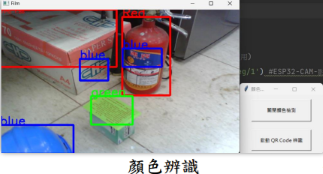
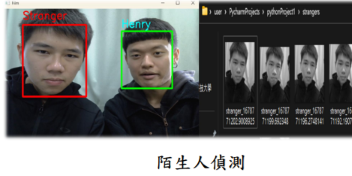
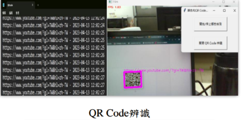
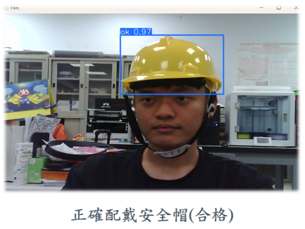
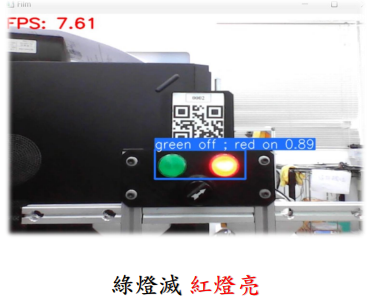

宗勳的申請書
個人簡介
關於我
學經歷
哈囉 我是李宗勳，畢業於明志科技大學主修機械工程專業，大三整年於在電動車散熱零組件公司實習，實習期間自學了些Python程式基礎
大四選擇自己有興趣的專題(影像辨識處理)，這些經歷讓我在程式撰寫方面有了實際的提升與應用，畢業後希望自己能朝自己有興趣的領域就業
，便報考資訊工程類的研究所，一方面是為了補齊資工六科的基礎，另一方面也希望自己能在該領域繼續進修，可惜最後考試成績僅差個位數備取而落榜，
在步入社會前仍希望在增強自身實作能力，先前也上過彭彭老師Youtube許多課程受益良多，因此前來報名精進自身能力。
- 泰山高中機械科
- 明志科技大學機械工程系
- 艾姆勒科技實習生1Y
- TQC 電腦輔助平面製圖
- 電動車機動整合-初級
- 台大資訊系統訓練班-C++進階程設合格
為了成為軟體工程師，做過什麼努力?
在學期間學習Python與影像處理相關基礎最終也順利做出成品，畢業後補修資訊工程相關學科後也另外自學C/C++語言用於線上解題，
申請WeHelp前也先學了些網頁架設相關基礎。
大四專題
收至最小
專題應用於工業安全相關，測試工人是否佩戴安全帽工作及正確操作指示燈，運用到顏色識別、人臉偵測、
QRcode辨識，最後使用 Yolo5 訓練紅綠燈號辨識與安全帽偵測。





如果參與訓練，會怎麼安排學習時間?
前期花費較多的時間建立基礎，一天約投入至少 8hr 學習，後續有實體活動也會積極參與，每日學習結束後製作當日筆記(自己習慣用HackMD)當作複習，
也方便自己往後複習用，一周會安排隔兩天晚上出門運動散散心。
是否有想加入的公司? 為什麼想加入該公司?
Dcard 平常最常使用的手機App之一，喜歡Dcard的文章排版方式與推薦的文章
，每次打開都覺得內容滿滿。
請描述一件產生明顯負面情緒的經歷，如何處理該情緒？
上面提到研究所考試僅差個位數備取， 事實上僅差一題之分差就得以上榜，而考試中剛好就粗心一題(中國餘數定理)，讓我至今都覺得非常可惜
考完後感到很懊悔當初時間不夠檢查，花了一個月時間讓自己好好休息重整心態才得以繼續學習，往後撰寫程式也更加注意細節，不希望再因自己的粗心大意而痛失機會，有時遇到bug解不開或是程式不知漏洞在哪，
常會出去散步下轉換心情，有時回來就想通了。
關於這份申請網頁，分享一個開發時的技術心得。
學完彭彭老師網站架設基礎後就開始實作，一開始遇到些問題像排版亂掉、字體位置錯誤之類的，趕緊回去複習影片並修正錯誤，我認為課程上完
僅是一個開始，正在要學會一門語言要多去實作遇到問題才知如何解決，下次遇到相同狀況便能迎刃於解。
請用簡短兩三句話，描述對你而言，最重要的一項人際交往原則。
學習溝通與他人團隊合作，多去換位思考理解他人想法，做事講求誠信。
其他想要對我們說的事情？
感謝老師在Youtube上公開的許多免費教材與付費會員教材，讓我學到很多 謝謝~